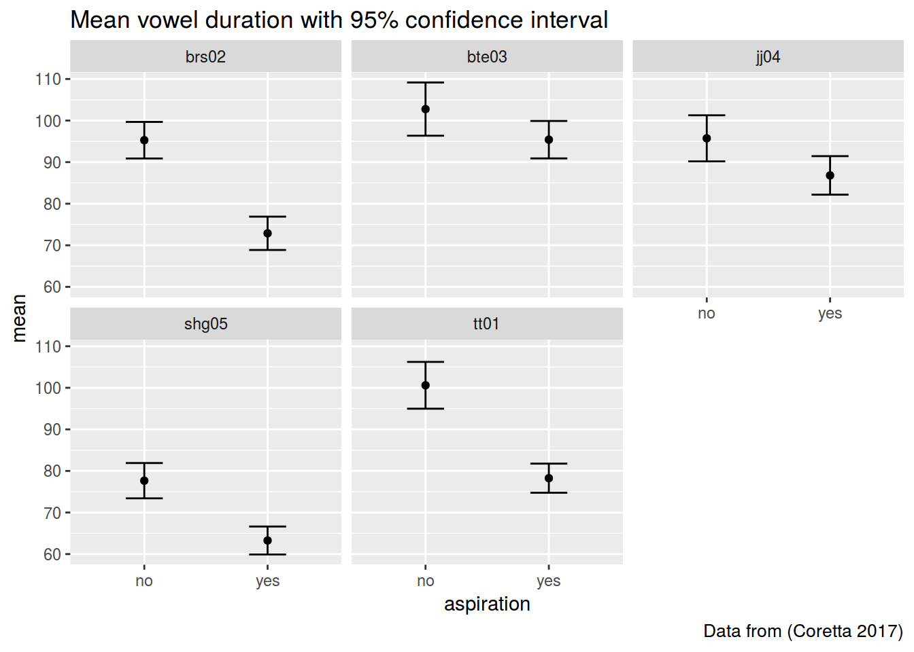
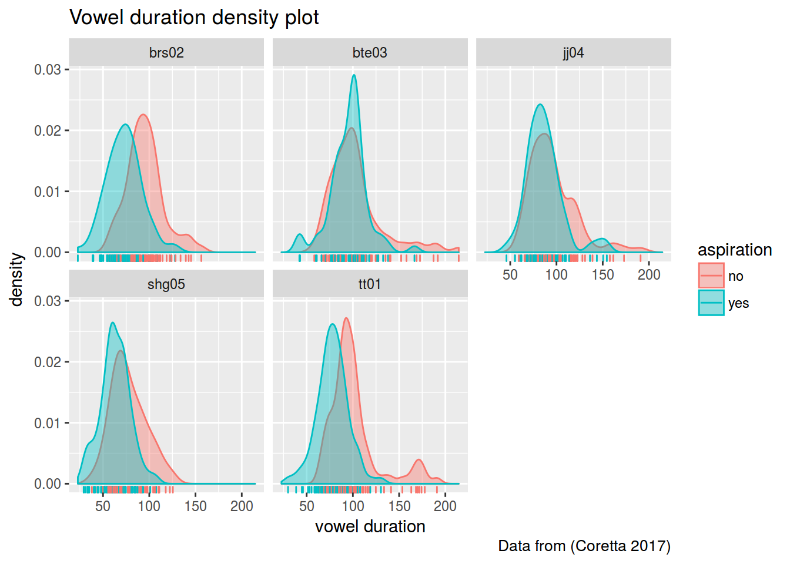

95% CI formula again: \(mean \pm 1.96\frac{standard\ deviation}{number\ of\ observation}\)
library(tidyverse)
icelandic <- read.csv("https://goo.gl/7gIjvK")
icelandic %>%
group_by(aspiration, speaker) %>%
summarise(mean = mean(vowel.dur),
CI = 1.96*sd(vowel.dur)/sqrt(length(vowel.dur)))## Source: local data frame [10 x 4]
## Groups: aspiration [?]
##
## aspiration speaker mean CI
## <fctr> <fctr> <dbl> <dbl>
## 1 no brs02 95.27593 4.396906
## 2 no bte03 102.75791 6.399292
## 3 no jj04 95.72652 5.542966
## 4 no shg05 77.65635 4.242477
## 5 no tt01 100.59767 5.625930
## 6 yes brs02 72.87988 4.009082
## 7 yes bte03 95.40109 4.503628
## 8 yes jj04 86.80463 4.634397
## 9 yes shg05 63.27287 3.363331
## 10 yes tt01 78.25853 3.498920icelandic %>%
group_by(aspiration, speaker) %>%
summarise(mean = mean(vowel.dur),
CI = 1.96*sd(vowel.dur)/sqrt(length(vowel.dur))) %>%
ggplot(aes(aspiration, mean))+
geom_point()+
geom_errorbar(aes(ymin= mean-CI,
ymax = mean+CI), width = 0.3)+
facet_wrap(~speaker)+
labs(title = "Mean vowel duration with 95% confidence interval",
caption = "Data from (Coretta 2017)")
icelandic %>%
ggplot(aes(vowel.dur, fill = aspiration, color = aspiration))+
geom_density(alpha = 0.4)+
geom_rug()+
facet_wrap(~speaker)+
labs(title = "Vowel duration density plot",
caption = "Data from (Coretta 2017)",
x = "vowel duration")
table(icelandic$speaker)##
## brs02 bte03 jj04 shg05 tt01
## 163 157 151 160 175icelandic_1 <- subset(icelandic,speaker == "brs02")
icelandic_2 <- subset(icelandic,speaker == "bte03")
icelandic_3 <- subset(icelandic,speaker == "jj04")
icelandic_4 <- subset(icelandic,speaker == "shg05")
icelandic_5 <- subset(icelandic,speaker == "tt01")
t.test.results_1 <- t.test(vowel.dur~aspiration, icelandic_1)
t.test.results_2 <- t.test(vowel.dur~aspiration, icelandic_2)
t.test.results_3 <- t.test(vowel.dur~aspiration, icelandic_3)
t.test.results_4 <- t.test(vowel.dur~aspiration, icelandic_4)
t.test.results_5 <- t.test(vowel.dur~aspiration, icelandic_5)library(lsr)
cohensD(vowel.dur~aspiration, data = icelandic_1)## [1] 1.15919cohensD(vowel.dur~aspiration, data = icelandic_2)## [1] 0.2908475cohensD(vowel.dur~aspiration, data = icelandic_3)## [1] 0.3902875cohensD(vowel.dur~aspiration, data = icelandic_4)## [1] 0.8318769cohensD(vowel.dur~aspiration, data = icelandic_5)## [1] 1.001688